Objetivos de Aprendizagem
- Apresentar definições de processos e as técnicas que o sistema operacional utiliza para garantir rapidez e confiabilidade no que foi solicitado pelo usuário.
- AIdentificar as situações de possíveis conflitos entre processos e como o sistema operacional trabalha com estes impasses.
INTRODUÇÃO
Escalonamento de processos

ESCALONAMENTO DE PROCESSOS
O escalonamento consiste em utilizar algoritmos para decidir qual processo deve ser utilizado. Tanenbaum (2010) define que em quatro determinadas situações deve haver escalonamento. São elas:
- Quando um processo é encerrado.
- Quando há um novo processo e existe a necessidade de tomar a decisão de executar o processo pai ou o processo filho.
- Quando um processo é bloqueado por um dispositivo de entrada/saída.
- Quando ocorre uma interrupção de entrada/saída.
Vamos exemplificar. Na primeira situação, um programa estava sendo executado e o usuário clicou no X no canto superior direito (caso o sistema operacional seja Windows). Com esta ação o processo é encerrado e o sistema operacional não tem mais que se preocupar com este, podendo assim escalonar e permitir que outros programas sejam processados.
Na segunda situação podemos imaginar que um usuário clicou duas vezes em um programa e este entrou em execução (iniciou um novo processo). Mas este processo precisa primeiro fazer uma consulta à base de dados para uma atualização para depois permitir que o usuário acesse suas funcionalidades. Compete ao escalonamento decidir qual processo terá prioridade, o de consultar a base de dados buscando atualizações ou o processo de iniciar o programa e apresentar as funcionalidades.
Na terceira situação, imagine um usuário gravando um CD-R. O escalonamento poderá bloquear alguns processos (incluindo outros dispositivos de entrada e saída) até que este processo de gravação chegue ao fim.
Na quarta situação, imagine um usuário digitando um texto e logo em seguida ele clica no botão IMPRIMIR. O escalonamento deve priorizar o processo de envio de solicitação de uso da impressora para depois voltar a permitir a inserção de texto. Logo que a impressão é finalizada, a impressora (que é um dispositivo de entrada e saída) emite uma interrupção informando a conclusão. O escalonamento para o processo atual, identifica a interrupção e a direciona para o processo correspondente.
O sistema operacional possuiu um conjunto grande de algoritmos de escalonamento que podem ser utilizados. Eles são divididos em:
- Algoritmos de escalonamento preemptivo: o processo é executado por um tempo máximo fixado.
- Algoritmos de escalonamento preemptivo: O processo é executado até que seja bloqueado.
Abaixo ieremos estudar alguns destes algoritimos.
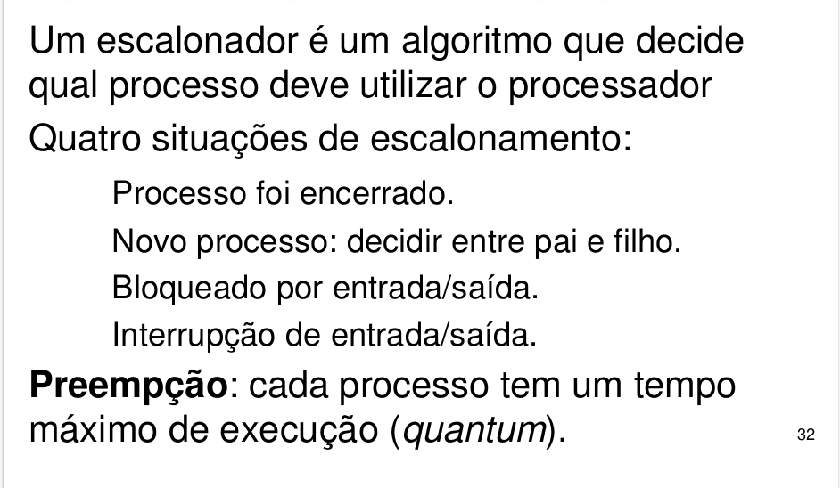
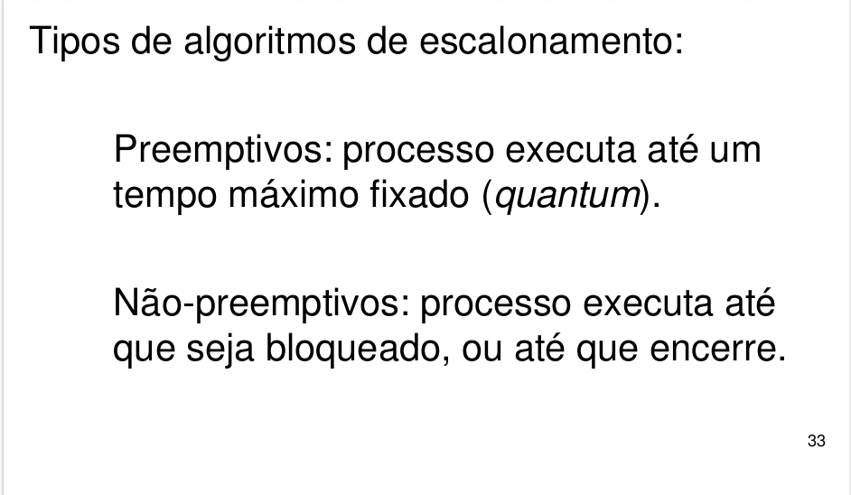
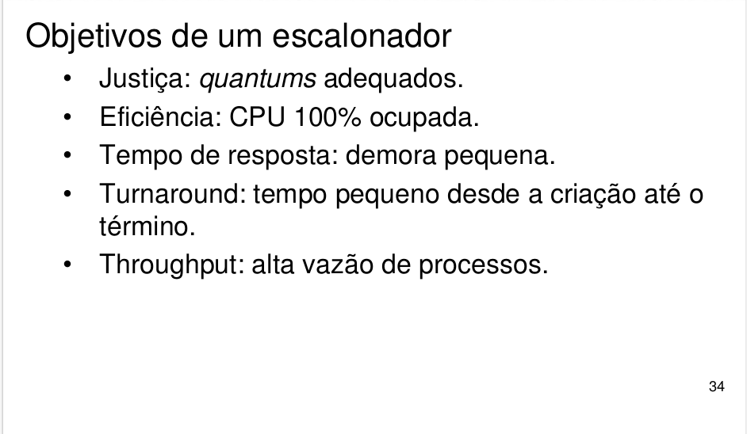 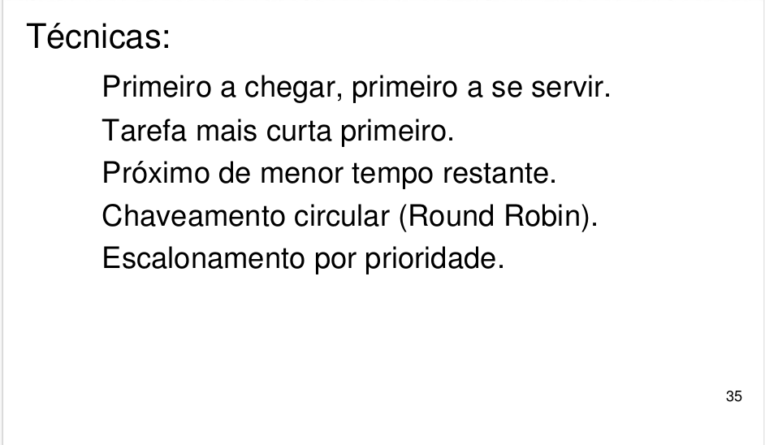
PRIMEIRO A CHEGAR, PRIMEIRO A SER SERVIDO
É o mais simples dos algoritmos de escalonamento. Também chamado de FCFS (first come, first served). Neste algoritmo, o processo que solicitar a CPU por primeiro é o que vai usá-la. Quando o processo é finalizado, o próximo processo da fila será escalonado para o processamento. Este algoritmo é muito comum em sistemas operacionais de computadores de grande porte com processamento em lote (batch jobs).
Uma desvantagem deste algoritmo é quando na fila existem dois processos de tamanhos distintos e o maior deles é processado por primeiro. O segundo processo ficará aguardando um bom tempo até que o primeiro processo seja finalizado. Com isto, o usuário que solicitou o segundo processo terá que ficar aguardando.
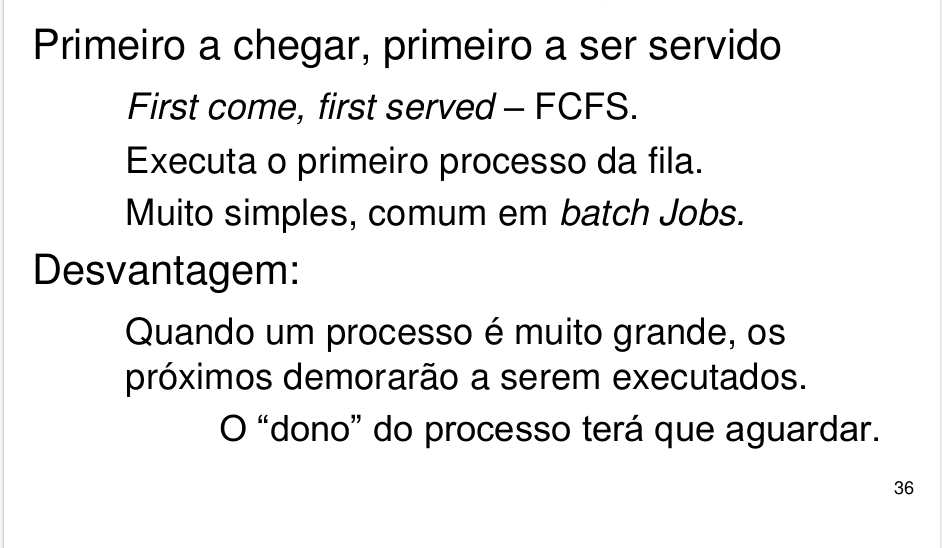
TAREFA MAIS CURTA PRIMEIRO
Conhecido como algoritmo SJF (shortest job first). Quando existem várias tarefas igualmente importantes à espera de uso da CPU, o escalonador decide por executar a tarefa mais curta primeiro.
Este algoritmo também é comum em sistemas operacionais de grande porte (batch jobs), mas também pode ser utilizado em sistemas operacionais multitarefas (como os de computadores pessoais). A restrição desde algoritmo é que todas as tarefas estejam simultaneamente disponíveis para serem usadas pela CPU.
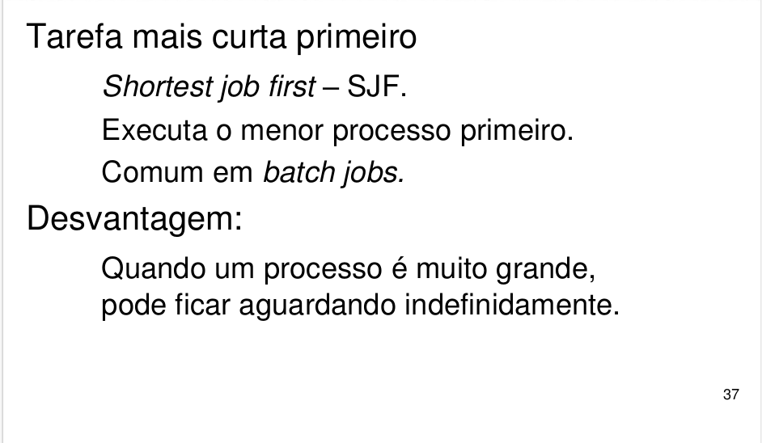
PRÓXIMO DE MENOR TEMPO RESTANTE
É muito semelhante à tarefa mais curta primeiro, mas em uma versão preemptiva (envolvendo tempo máximo fixado). Neste algoritmo, o tempo de execução de cada processo deve ser previamente conhecido e o escalonador irá decidir pelo que levará menos tempo para ser finalizado.
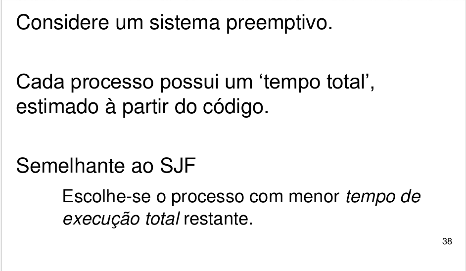
CHAVEAMENTO CIRCULAR (ROUND-ROBIN)
Este algoritmo é semelhante ao FCFS, mas com a adição de preempção para permitir que o sistema alterne entre os processos não gerando um tempo de espera excessivo para o usuário. Em cada processo é atribuída uma unidade de tempo denominada quantum, que representará o tempo que o processo terá para o processamento.
Quando é chegado ao final do quantum, a CPU é chaveada para outro processo. Caso o processo não tenha chegado ao seu fim, o mesmo ficará com estado bloqueado e voltará a ser processado quando chegar a sua vez novamente e ter decorrido o quantum dos demais processos.
Com esta técnica os processos na fila são atendidos de pouco em pouco. Como as atuais CPUs são muito rápidas, o usuário tem a falsa sensação que múltiplas tarefas ocorrem ao mesmo tempo.
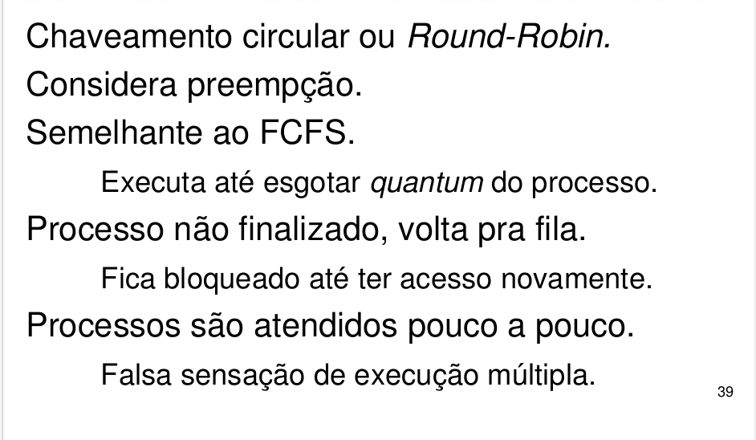
ESCALONAMENTO POR PRIORIDADE
O chaveamento circular trata todos os processos de forma igual, mas em algumas situações alguns processos são mais importantes que outros e obedecendo estes critérios de prioridades, o sistema operacional pode decidir de maneira diferente a forma como escalonar
Estas prioridades podem ser adicionadas interna e externamente. Caso você utilize Windows, abra o gerenciador de tarefas (pressione simultaneamente CTRL+ALT+DEL) e clique na aba PROCESSOS. Clique com o botão direito em qualquer processo e selecione DEFINIR PRIORIDADE (conforme mostra a figura abaixo). Perceba os níveis de prioridade existentes. Isto irá interferir em como o escalonador irá trabalhar.
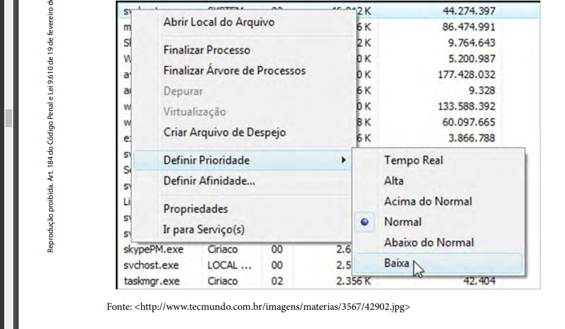
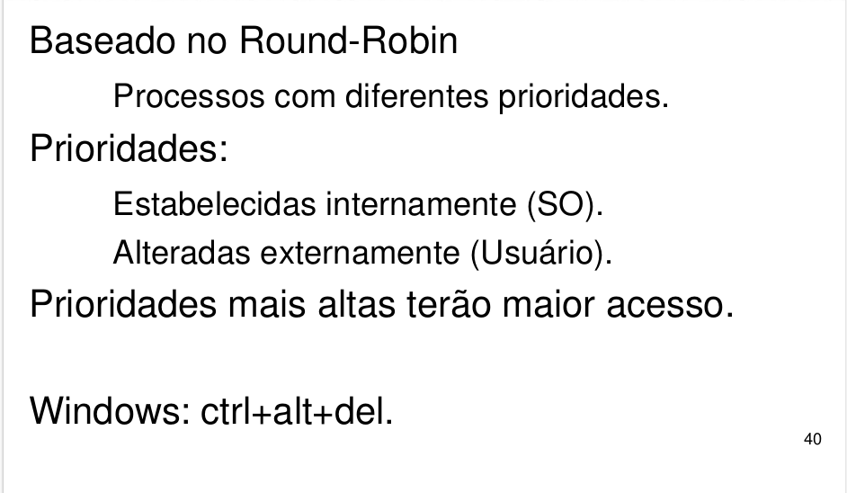
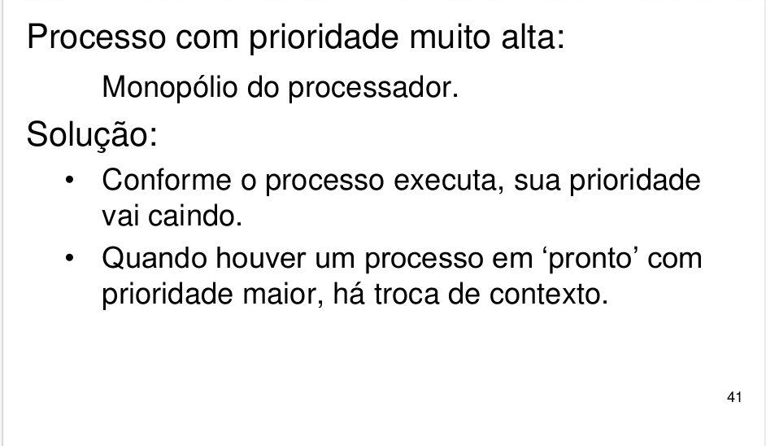